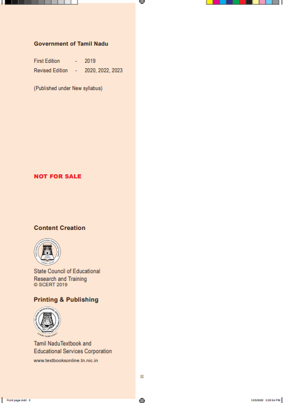
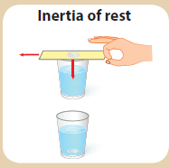
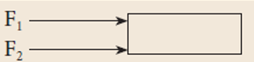
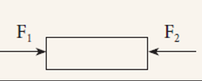
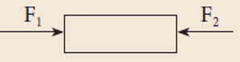

![In this picture preface is given. This book is developed in a holistic approach which inculcates comprehending and analytical skills. It will be helpfull for the students to understand higher secondary science in a better way and to prepare for competitive exams in future. This textbook is designed in a learner centric way to trigger the thought process of students through activities and to make them excel in learning science. How to use the Book? This book has 23 units. Each unit has simple activities that can be demonstrated by the teacher and also few group activities are given for students to do under the guidance of the teacher. Infographics and info-bits are added to enrich the learner’s scientific perception. The “Do you know?” and “More to know” placed in the units will be an eye opener. Glossary has been introduced to learn scientific terms. ICT corner and QR code are introduced in each unit for the digital native generation.](images/image-2.png)

![This picture is about career guidance. Engineering Courses B.E. / B.Tech 4 years. Aeronautical Engineering Aerospace Engineering Architecture Engineering Automobile Engineering Automation & Robotics Engineering Avionics Engineering Bio Medical Engineering Bio Technology Engineering Civil Engineering Chemical Engineering Ceramic Engineering Computer Science Engineering Construction Management & Technology Engineering Electronics and Communication Engineering Electrical and Electronics Engineering Environmental Science Engineering Information Science Engineering Industrial Engineering Industrial Production Engineering Instrumentation Technology Marine Engineering Medical Electronics Engineering Mechanical Engineering Mining Engineering Manufacturing Science Engineering Naval Architecture Polymer Technology Silk Technology Engineering Carpet Technology Engineering Textile Engineering Agriculture Courses 4 years B.Sc. Agriculture Science B.Sc. Horticulture B.Sc. Forestry B.Tech Agricultural Engineering Medical Course 5 years MBBS – Allopathy BSMS – Siddha BAMS - Ayurveda BUMS – Unani BHMS – Homeopathy BNYS – Naturopathy & Yoga BDS – Dental BVSc – Veterinary Paramedical Diploma / UG 2/3 years Nursing Pharmacy Anaesthesia Technician Cardiac Technician Dental Mechanic Health Inspector Medical imaging & tech Medical Lab Tech Medical X-ray Tech Nuclear Medicine Tech Occupational therapist Operation Theatre Tech Ophthalmic Assistant Physiotherapy Radiographic Assistant Radiotherapy Tech Rehabilitation Tech Respiratory Therapy Tech Blood Transfusion Tech Humanities 3 years Advertising BA-General Criminology Economics Fine Arts Foreign Languages Home Science Interior Design Journalism Library Sciences Physical Education Political Science Psychology Social Work Sociology Travel & Tourism](images/image-3.png)
![This picture is about road ahead after 12th B.Sc., Courses 3 years B.Sc. Physics B.Sc. Chemistry B.Sc. Botany B.Sc. Zoology B.Sc. Mathematics B.Sc. Computer Science B.Sc. PCM B.Sc. CBZ B.Sc. Dietician & Nutritionist B.Sc. Sericulture B.Sc. Oceanography B.Sc. Meteorology B.Sc. Anthropology B.Sc. Forensic Sciences B.Sc. Food Technology B.Sc. Dairy Technology B.Sc. Hotel Management B.Sc. Fashion Design B.Sc. Mass Communication B.Sc. Electronic Media B.Sc. Multimedia B.Sc. 3D Animation B.Sc. Home Science Commerce Courses 3 years CA – Chartered Accountant CMA Cost Management Accountant CS Company Secretary (Foundation) B.com – Regular B.com – Taxation & Tax Procedure B.com – Travel & Tourism B.com – Bank Management B.com – Professional BBA/BBM – Regular BFM – Bachelors in Financial Markets BMS – Bachelors in Management Studies BAF – Bachelors in Accounting & Finance Certified Stock Broker & Investment Analysis Certified Financial Analyst Certified Financial Planner Certified Investment Banker Management Courses (3 years) Business Management Bank Management Event Management Hospital Management Hotel Management Human Resources Management Logistics & Management C A CPT ATC IPCC ITT (100 Hours) Article ship Work under in CA Clear Final Exam Become a C.A. Law Courses 3.5 years LLB BA+LLB B.Com + LLB BBM+LLB BBA+LLB](images/image-4.png)
Table Of Contents
Unit |
Title |
Page No. |
1 |
Laws of Motion |
1 |
2 |
Optics |
16 |
3 |
Thermal Physics |
32 |
4 |
Electricity |
42 |
5 |
Acoustics |
59 |
6 |
Nuclear Physics |
74 |
7 |
Atoms and Molecules |
173 |
8 |
Periodic Classification of Elements |
155 |
9 |
Solutions |
124 |
10 |
Types of Chemical Reactions |
106 |
11 |
Carbon and its Compounds |
157 |
Unit |
Title |
Page No. |
12 |
Plant Anatomy and Plant Physiology |
|
13 |
Structural Organisation of Animals |
187 |
14 |
Transportation in Plants and Circulation in Animals |
200 |
15 |
Nervous System |
218 |
16 |
Plant and Animal Hormones |
229 |
17 |
Reproduction in Plants and Animals |
263 |
18 |
Heredity |
261 |
19 |
Origin and Evolution of Life |
329 |
20 |
Breeding and Biotechnology |
286 |
21 |
Health and Diseases |
300 |
22 |
Environmental Management |
25 |
23 |
Visual Communication |
25 |
24 |
Practicals |
|
At the end of this lesson students will be able to:
Human beings are so curious about things around them. Things around us are related to one another. Some bodies are at rest and some are in motion. Rest and motion are interrelated terms.
In the previous classes you have learnt about various types of motion such as linear motion, circular motion, oscillatory motion, and so on. So far, you have discussed the motion of bodies in terms of their displacement, velocity, and acceleration. In this unit, let us investigate the cause of motion.
When a body is at rest, starts moving, a question that arises in our mind is ‘what causes the body to move?’ Similarly, when a moving object comes to rest, you would like to know what brings it to rest? If a moving object speeds up or slows down or changes its direction. what speeds up or slows down the body? What changes the direction of motion?
One answer for all the above questions is ‘Force’. In a common man’s understanding of motion, a body needs a ‘push’ or ‘pull’ to move or bring to rest or change its velocity. Hence, this ‘push’ or ‘pull’ is called as ‘force’.
Let us define force in a more scientific manner using the three laws proposed by Sir Isaac Newton. These laws help you to understand the motion of a body and also to predict the future course of its motion, if you know the forces acting on it. Before Newton formulated his three laws of motion, a different perception about the force and motion of bodies prevailed. Let us first look at these ideas and then eventually learn about Newton’s laws in this unit.
Mechanics is the branch of physics that deals with the effect of force on bodies. It is divided into two branches, namely, statics and dynamics.
Statics: It deals with the bodies, which are at rest under the action of forces.
Dynamics: It is the study of moving bodies under the action of forces. Dynamics is further divided as follows.
Kinematics: It deals with the motion of bodies without considering the cause of motion.
Kinetics: It deals with the motion of bodies considering the cause of motion.
According to Aristotle a Greek Philosopher and Scientist, the natural state of earthly bodies is ‘rest’. He stated that a moving body naturally comes to rest without any external influence of the force. Such motions are termed as ‘natural motion’ (Force independent). He also proposed that a force (a push or a pull) is needed to make the bodies to move from their natural state (rest) and behave contrary to their own natural state called as ‘violent motion’ (Force dependent). Further, he said, when two different mass bodies are dropped from a height, the heavier body falls faster than the lighter one.
Galileo proposed the following concepts about force, motion and inertia of bodies:
While you are travelling in a bus or in a car, when a sudden brake is applied, the upper part of your body leans in the forward direction. Similarly, when the vehicle suddenly is moved forward from rest, you lean backward. This is due to, anybody would like to continue to be in its state of rest or the state of motion. This is known as ‘inertia’.
The inherent property of a body to resist any change in its state of rest or the state of uniform motion, unless it is influenced upon by an external unbalanced force, is known as ‘inertia’.
Activity 1
Take a glass tumbler and place a small cardboard on it as shown in the figure. Now, keep a coin at the center of the cardboard. Then, flick the cardboard quickly. What do you observe?
The cardboard falls off the ground and the coin falls into the glass tumbler.

In activity described above, the inertia of the coin keeps it in the state of rest when the cardboard moves. Then, when the cardboard has moved, the coin falls into the tumbler due to gravity. This happens due to ‘inertia of rest’.
Figure 1.1 Inertia of motion
The impact of a force is more if the velocity and the mass of the body is more. To quantify the impact of a force exactly, a new physical quantity known as linear momentum is defined. The linear momentum measures the impact of a force on a body.
The product of mass and velocity of a moving body gives the magnitude of linear momentum. It acts in the direction of the velocity of the object. Linear momentum is a vector quantity.
Linear Momentum = mass × velocity
p = m v (1.1)
It helps to measure the magnitude of a force. Unit of momentum in SI system is kilogram metre second power minus one and in C.G.S system its unit is gram centimeter second power minus one.
This law states that everybody continues to be in its state of rest or the state of uniform motion along a straight line unless it is acted upon by some external force. It gives the definition of force as well as inertia. body.
Force has both magnitude and direction. So, it is a vector quantity.
Based on the direction in which the forces act, they can be classified into two types as:
(a) Like parallel forces: Two or more forces of equal or unequal magnitude acting along the same direction, parallel to each other are called like parallel forces.
(b) Unlike parallel forces: If two or more equal forces or unequal forces act along opposite directions parallel to each other, then they are called unlike parallel forces. Action of forces are given in Table 1.1.
When several forces act simultaneously on the same body, then the combined effect of the multiple forces can be represented by a single force, which is termed as ‘resultant force’. It is equal to the vector sum (adding the magnitude of the forces with their direction) of all the forces.
Table 1.1 action of forcres
Action of forces |
Diagram |
Resultant force (F net) |
Parallel forces are acting in the same direction |
 |
F net = F 1 + F 2 |
Parallel unequal forces are acting in opposite direction |
 |
F net = F1 minus F2 ( if F 1 is greater than F 2) F net = F2 minus F1 ( if F 2 is greater than F 1) F net is directed along the greater force.
|
Parallel equal forces are acting in opposite directions in the same line of action ( F 1 = F 2) |
 |
F net = F1 minus F2 (F 1 = F2) F net = 0 |
Figure 1.2 Combined effect of forces